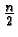

0.3.1.2 Partitioning
Now, here is code to do the actual work of dividing an input range
into two partitions based on a pivot point. Again, it is written in
C:
int partition (data *array, int left, int right, int pivotval) {
do {
swap (&array[left], &array[right]);
while (value(array[left]) < pivotval) left++;
while (value(array[right]) >= pivotval) right++;
} while (right >= left);
/* this will be the value of the first element in the right part */
return (left);
}
The above routine cleverly moves inward from each end of the input
range swapping data values that are on the wrong side of the pivot
value until the two inward-moving indices meet in the middle. The
initial swap, above, is not necessary; it is included only to make the
do-loop more simple. In the worst case, n-1 comparisons and

swaps are necessary to partition the data set.
|